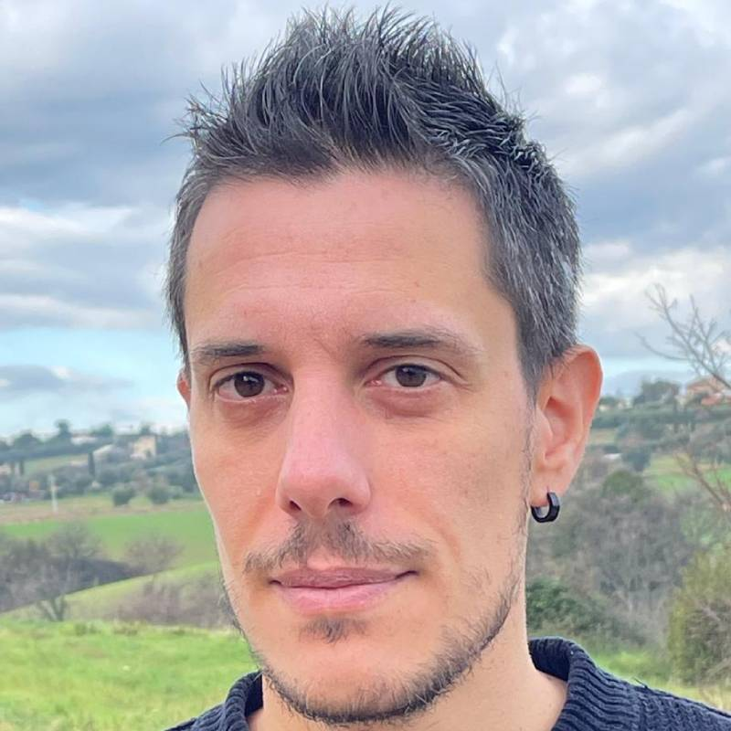

Caramella
Cortometraggio d'autore, scritto e diretto. Storia, regia, post-produzione.
★ Fano International Film Festival 2025 — Miglior film d'autore marchigiano

Chi c'è dietro Oh Writers
developer · filmmaker
Vivo a Porto Sant'Elpidio, in provincia di Fermo. Faccio film e scrivo codice. Le due cose, per anni, sono andate in parallelo senza incontrarsi mai davvero. Oh Writers è il primo lavoro in cui le ho messe a parlare.
I solve problems. I tell stories.
I film
Cortometraggi indipendenti, girati nelle Marche con troupe ridotte e tempi brevi. È il contesto che ha dato forma allo strumento.
Cortometraggio d'autore, scritto e diretto. Storia, regia, post-produzione.
★ Fano International Film Festival 2025 — Miglior film d'autore marchigiano
Girato in quattro giorni al Ristorante L'Oasi del Gusto, Piane di Falerone. Filippo, comico fallito, prepara impasti e prova battute. Il progetto demo dentro Oh Writers parla di lui.
In programmazione assieme a Caramella al Teatro Beato Pellegrino di Falerone — 22 febbraio 2026.
Le due tracce
Oh Writers nasce esattamente nell'intersezione. Tutto quello che costruisco, lo costruisco per chi fa cinema — e lo costruisco sapendo come funziona davvero un set.
JavaScript e TypeScript da oltre dieci anni. Stack moderno: TanStack Start, Astro, React, programmazione funzionale. Anthropic API agentic, prompt caching, tool loops. Approccio AI-assisted, human-driven — l'AI lavora con me, non al posto mio.
Scrivo e dirigo cortometraggi indipendenti. Conosco gli ottimi strumenti che il mercato offre — Final Draft, Movie Magic, StudioBinder — e conosco bene il vuoto fra loro. Oh Writers è la risposta di un filmmaker, non di un product manager.
"Volevo solo tracciare le mie sessioni di meditazione. Ho finito per ripensare come scrivo codice."
— Valerio, su valerionarcisi.me
Cosa è in arrivo
Proiezione Arturo + Caramella
Teatro Beato Pellegrino, Falerone (FM). Serata pubblica con i due cortometraggi.
Oh Writers in sviluppo continuo
Lo uso ogni giorno per i miei progetti. Aperto a chi voglia provarlo dentro un proprio film.
Dove sono
Tutto è raggiungibile. Niente è formale.